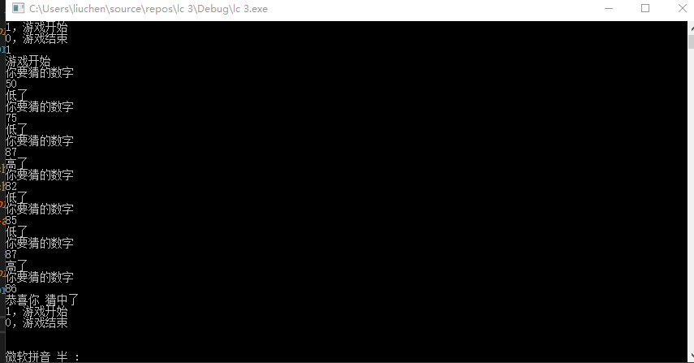

2019 04 07
第一次写博客就记录最基础的c语言下的利用循环 使用时间戳的猜数字游戏
vs 实现
#define _CRT_SECURE_NO_WARNINGS // vs 下的宏定义 （scanf）
#include<stdio.h>
#include<stdlib.h>
#include<string.h>
#include <time.h>
int Menu() {
int choice = 0;
printf("1，游戏开始\n");
printf("0，游戏结束\n");
scanf("%d", &choice);
return choice;
}
void Game() {
//加入时间戳 保证取到随机数
srand((unsigned int)time(0)); //(unsigned int)类型的强制转换
int result = rand() % 100 + 1;//产生随机数0-100
while (1) {
printf("你要猜的数字\n");
int num = 0;
scanf("%d", &num);
if (num > result) {
printf("高了\n");
}
else if (num < result) {
printf("低了\n");
}
else {
printf("恭喜你 猜中了\n");
break;
}
}
}
int main()
{
while (1) {
int choice = Menu();
if (choice == 1) {
printf("游戏开始\n");
Game();
}
else {
printf("good bye \n");
break;
}
}
system ("pause");
return 0;
}
